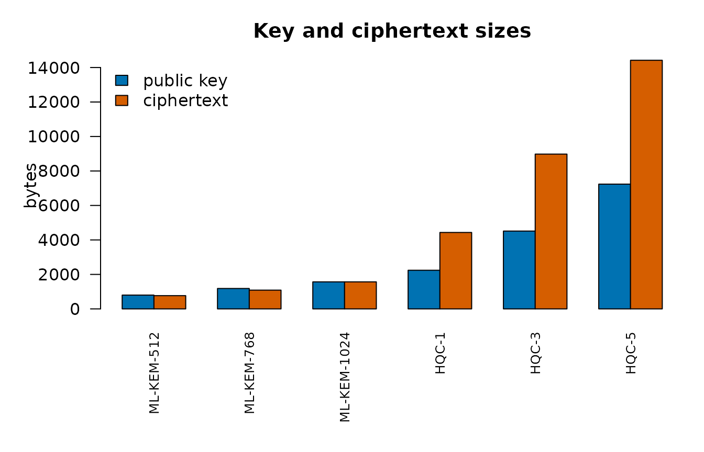

A key-encapsulation mechanism (KEM) lets two parties agree on a shared secret over a public channel: the sender encapsulates a fresh secret under the recipient’s public key, producing a ciphertext; the recipient decapsulates the ciphertext with the secret key and recovers the same secret. The package implements ML-KEM (FIPS 203, lattice-based) and HQC (code-based), natively.
ML-KEM
key <- kemkg(768)
pub <- kempubkey(key)
# the sender holds only the public key
sent <- kemencap(pub)
# the recipient recovers the same secret from the ciphertext
got <- kemdecap(key, sent$ciphertext)
identical(sent$shared, got)
#> [1] TRUEThree parameter sets trade size for security margin:
kemsz(512)
#> public secret ciphertext seed shared
#> 800 1632 768 64 32
kemsz(768)
#> public secret ciphertext seed shared
#> 1184 2400 1088 64 32
kemsz(1024)
#> public secret ciphertext seed shared
#> 1568 3168 1568 64 32Implicit rejection
ML-KEM is designed so that a corrupted ciphertext does not produce an error. It produces a different, pseudorandom secret derived from the secret key and the ciphertext. This is the Fujisaki–Okamoto transform’s implicit rejection: an attacker who tampers with ciphertexts learns nothing from the recipient’s behaviour, because the recipient behaves identically either way.
Masked decapsulation (the default)
Decapsulation is the operation that uses the secret key, so it is the one a power or electromagnetic side channel would target. Since 0.5.10 it runs first-order masked by default: every value that depends on the secret key is held as two random shares that are refreshed from the operating system’s randomness on every call, and the re-encryption comparison of the FO transform is done on shares (the decompressed comparison of Bhasin et al., TCHES 2021). The result is byte-identical to the plain computation:
identical(kemdecap(key, sent$ciphertext, masked = FALSE), got)
#> [1] TRUE
identical(kemdecap(key, bad, masked = FALSE), other)
#> [1] TRUEmasked = FALSE is three to four times faster for
decapsulation (seven to eleven for ML-DSA signing) and is the right
choice where no physical attacker is in the threat model (a server in a
locked room). The Side-channel assurance vignette explains what
the masking defends against and how it was verified.
Key validation
FIPS 203 §7.3 requires a decapsulation key to be checked before use: its stored hash of the encapsulation key must match the key it contains. A key that fails this check is refused rather than used. This check was added after the Wycheproof vectors showed the earlier code accepted such a key.
HQC
HQC rests on the hardness of decoding random quasi-cyclic codes, an assumption unrelated to lattices, which is why NIST selected it as the second KEM. The interface is the same:
hkey <- hqckg(1)
hpub <- hqcpubkey(hkey)
hsent <- hqcencap(hpub)
identical(hqcdecap(hkey, hsent$ciphertext), hsent$shared)
#> [1] TRUE
hqcsz(1)
#> public secret ciphertext seed message salt shared
#> 2241 2321 4433 32 16 16 32Two revisions are implemented: the 2025 specification
(version = "v5", the default) and the round-4 submission
(version = "round4"), which differ in their shared-secret
derivation. A key made under one does not interoperate with the other,
and the version is recorded in the key:
old <- hqckg(1, ver = "round4")
cap <- hqcencap(hqcpubkey(old))
identical(hqcdecap(old, cap$ciphertext), cap$shared)
#> [1] TRUEUsing the shared secret
The shared secret is 32 bytes of hex. It is a key, not a
password: use it directly as the key of chmac() or to
derive further keys, never as text to be stored.
How these implementations are checked
ML-KEM runs against the NIST ACVP and C2SP Wycheproof sets (key
generation, encapsulation, decapsulation and key validation), is
compared byte for byte with OpenSSL 3.5, and is differentially fuzzed
against it. Decapsulation’s timing is measured on real x86-64 and arm64
CPUs with dudect, its constant-time property is proved under valgrind,
and its masked arithmetic is assessed for first-order power leakage in a
Cortex-M4 simulation. See SECURITY.md in the
repository.
Sending a table to a community data steward
Key encapsulation lets a sender share a table so only the holder of a secret key can read it, for instance a First Nations data steward receiving a release:
The sizes in a picture
What each parameter set puts on the wire: the public key the steward
publishes and the ciphertext each sender transmits, in bytes, for ML-KEM
(kemsz()) and HQC (hqcsz()).
sz <- rbind(
"ML-KEM-512" = kemsz(512L)[c("public", "ciphertext")],
"ML-KEM-768" = kemsz(768L)[c("public", "ciphertext")],
"ML-KEM-1024" = kemsz(1024L)[c("public", "ciphertext")],
"HQC-1" = hqcsz(1L)[c("public", "ciphertext")],
"HQC-3" = hqcsz(3L)[c("public", "ciphertext")],
"HQC-5" = hqcsz(5L)[c("public", "ciphertext")]
)
op <- par(mar = c(7, 5, 3, 1))
barplot(
t(sz),
beside = TRUE,
col = blpal()[1:2],
ylab = "bytes",
las = 2,
cex.names = 0.8,
legend.text = c("public key", "ciphertext"),
args.legend = list(x = "topleft", bty = "n"),
main = "Key and ciphertext sizes"
)
par(op)